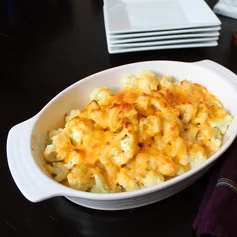

Cauliflower Au Gratin

One of my favorite ways to make cauliflower.
This is an excellent basic recipe to riff on, which really are the best kind. It is flexible, stands up to changes and substitutions.
The cauliflower absorbed all of the sauce. It turned out perfect. One head made a full Pyrex dish. Will def. use the sauce again for potatoes and make THIS dish again.
Ingredients
- 1 head cauliflower, cut into florets
- 2 tablespoons butter
- 1 cup chopped onion
- 2 tablespoons all-purpose flour
- 1 cup milk
- 6 ounces shredded Cheddar cheese, divided
- 1 pinch ground black pepper
- 1 pinch ground nutmeg, or to taste
Directions
- Place a steamer insert into a saucepan and fill with water to just below the bottom of the steamer. Bring water to a boil. Add cauliflower, cover, and steam until tender, 5 to 7 minutes.
- Preheat oven to 350 degrees F (175 degrees C). Grease a 9x9-inch baking dish.
- Heat butter in a small saucepan over low heat; cook and stir onion in the melted butter until softened, about 5 minutes. Add flour; cook, stirring constantly, until mixture just starts to brown, 3 to 5 minutes. Gradually pour milk into mixture, whisking into a smooth sauce. Cook until just simmering.
- Remove sauce from heat and stir in half the Cheddar cheese until melted; sprinkle with pepper and nutmeg.
- Place steamed cauliflower in the prepared baking dish; pour cheese sauce over cauliflower. Sprinkle with remaining Cheddar cheese.
- Bake in the preheated oven until cheese is melted and browned, about 25 minutes.